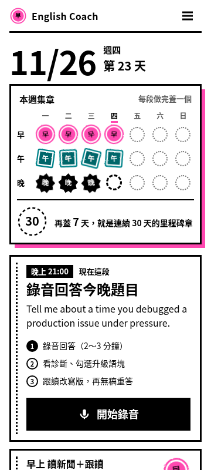
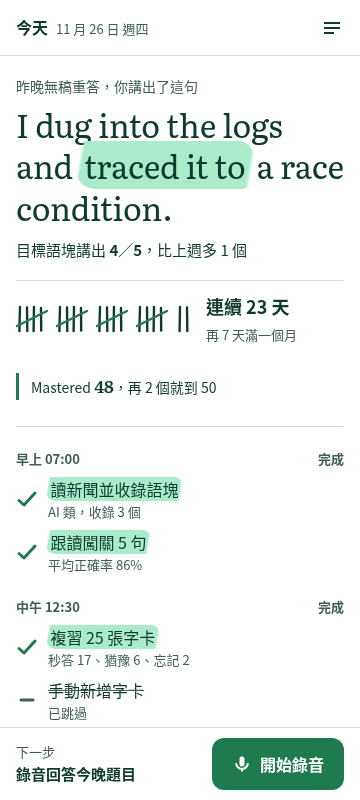
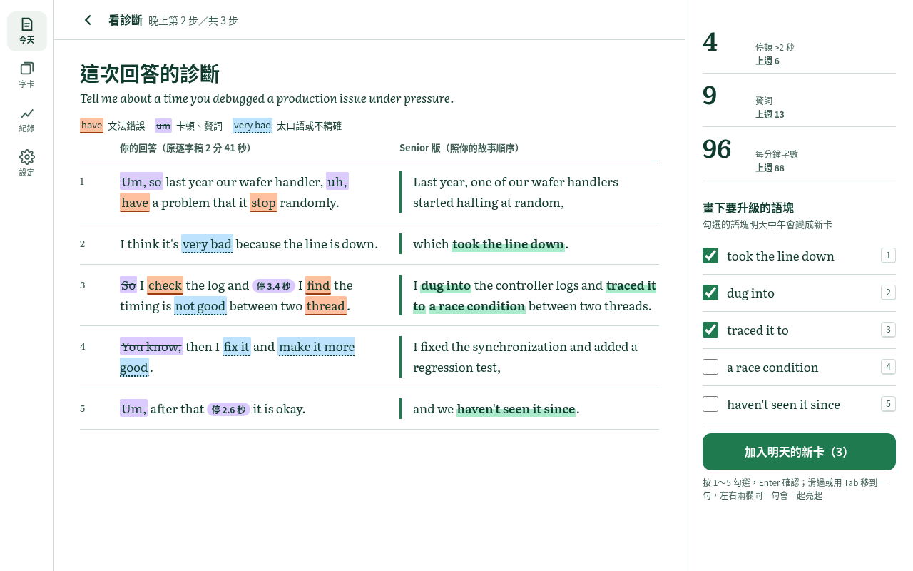

english-coach D1 風格方向比較（第 1 輪，最多 2 輪）
依 D0 決定：活潑一點、有遊戲化鼓勵，但不做 Duolingo 翻版、不用 emoji 圖示。三個方向用同一組畫面比較：手機＝今天的課表首頁、電腦＝晚上口說診斷（AC-15 左右對照）。全部是假資料的靜態原型，不連後端。可以混搭，例如「B 的集章＋C 的逐句對照」。
A 三圈賽道
北極星：每天三圈，像運動手錶一樣把英文練習「跑完」。
- 有勁
- 計分板
- 一眼看到進度


適合
- 遊戲化最直接：三段＝三圈，關圈的成就感很強，手機一眼看懂。
- 計分板式的數字（停頓、贅詞、字速）很有「練習數據」的感覺，符合工程師。
不適合／風險
- 三個同心圈和 Apple 健身「圓圈」很像，有撞臉風險，D2 要改成自己的圖形（例如跑道三條線道）。
- 需要一個新字型（Barlow Condensed），要 Architect 決定。
- 診斷是兩段整段文字，逐句對應要自己找。
參考（2026-11-26 實際打開）
- 同類／遊戲化：Apple「Close Your Rings」三圈與里程碑 apple.com/watch/close-your-rings
- 習慣打卡：Streaks（Apple Design Award）大字窄體＋圈狀進度 streaksapp.com
- 運動紀錄：Strava strava.com、Nike Run Club nike.com/nrc-app
- 字型：Barlow Condensed fonts.google.com/specimen/Barlow+Condensed
B 集章冊
北極星：每做完一段就蓋一個章，看著自己的集章冊一天天蓋滿。
- 好玩
- 手作印刷感
- 收集



適合
- 「蓋章」剛好對應 PRD 的早中晚三格打卡（AC-21），完成回饋（蓋章動畫）自然又不幼稚。
- 最不像 Duolingo，也不像一般 AI 模板；不用新字型、不用新依賴。
不適合／風險
- 粗黑框與錯位色塊很有個性，每天看 80 分鐘可能偏吵；D2 要把診斷這類閱讀頁收安靜一點。
- 螢光粉只能當圖形，不能當字色（對比 3.09:1）。
- Android 上 Noto Sans TC 有沒有最粗字重「不確定」，沒有時會退成粗體（本截圖就是粗體）。
參考（2026-11-26 實際打開）
- 跨領域：日本車站紀念章（駅スタンプ）的集章文化 en.wikipedia.org/wiki/Eki_stamp
- Riso 油墨色與疊印 stencil.wiki Riso inks、en.wikipedia.org/wiki/Risograph
- 同類／溫和遊戲化：Gentler Streak（Apple Design Award）gentler.app
- 設計獎：Apple Design Awards「Delight and Fun」手繪、玩心的介面 developer.apple.com/design/awards
C 螢光筆草稿
北極星：把英文當成一份越改越好的稿子，用螢光筆畫出今天又進步的地方。
- 好讀
- 手寫筆記感
- 一句一句進步





適合
- 診斷最好讀：逐句對齊（像程式碼 diff 的左右對照），手機用逐句上下分段，最符合 AC-15。
- 長時間閱讀不累，英文內容用閱讀字型。
不適合／風險
- 遊戲化比較含蓄（劃記、螢光筆、里程碑小註記），可能不夠「活潑」。
- 需要一個新字型（Literata），要 Architect 決定。
參考（2026-11-26 實際打開）
- 寫作標註：Hemingway Editor 用不同顏色標出難句、贅字、簡單字 hemingwayapp.com
- 左右對照：GitHub 比較分支的 split diff docs.github.com（about comparing branches）
- 閱讀與畫重點：Readwise Reader readwise.io/read
- 同類（英文口說）：Speak speak.com、ELSA Speak elsaspeak.com
- 字型：Literata fonts.google.com/specimen/Literata
Designer 的推薦：B 集章冊，診斷頁借用 C 的逐句對照
理由：B 最符合「活潑、有遊戲化鼓勵」，而且鼓勵方式（蓋章）直接對應 PRD 早中晚三段打卡，不用新增徽章或點數功能；它同時離 Duolingo 和 Apple 健身圈最遠，也不用新字型。B 唯一的弱點是閱讀頁偏吵，所以晚上診斷建議改用 C 的逐句對照版面（保留 B 的配色與印章數字），電腦左右逐句、手機逐句上下分段。
如果你更想要「一眼看進度、運動感」，選 A；如果診斷好讀比活潑更重要，選 C。
| 比較 | A 三圈賽道 | B 集章冊 | C 螢光筆草稿 |
|---|---|---|---|
| 版面 | 計分板＋底部分頁列；電腦上方計分板、兩欄 | 集章格＋票券；電腦上方導覽、錯位紙張 | 文件式清單＋下方「下一步」列；電腦左側圖示列＋右側欄 |
| 字體 | 窄體數字＋系統黑體 | 只用系統黑體（粗細對比） | 襯線英文＋系統黑體 |
| 色彩 | 鈷藍＋檸檬黃 | 螢光粉＋藍綠＋黑 | 墨綠＋四色螢光 |
| 主視覺 | 三個進度圈 | 印章 | 螢光筆筆觸＋劃記 |
| 新字型依賴 | 要（Barlow Condensed） | 不用 | 要（Literata） |
請在手機和電腦上都點開看看，再回覆選哪一個（可以混搭），也可以說具體喜歡或不喜歡哪裡。